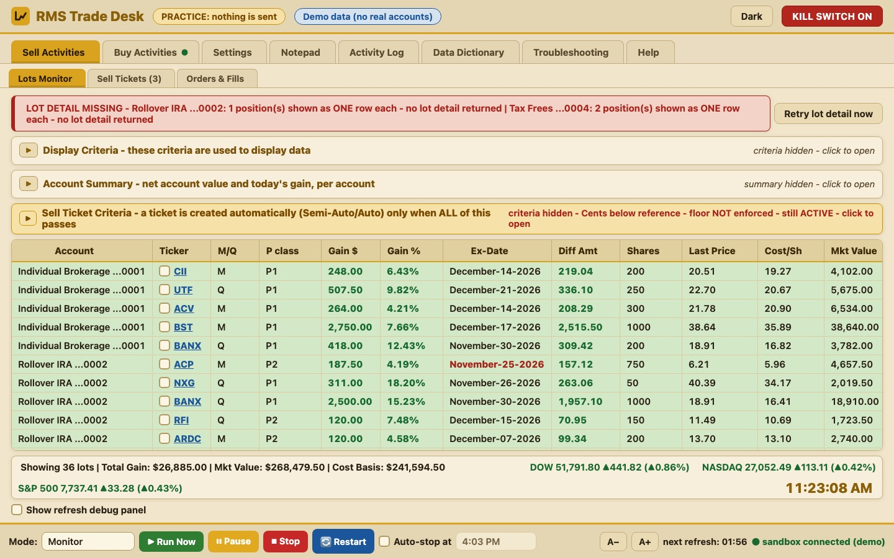
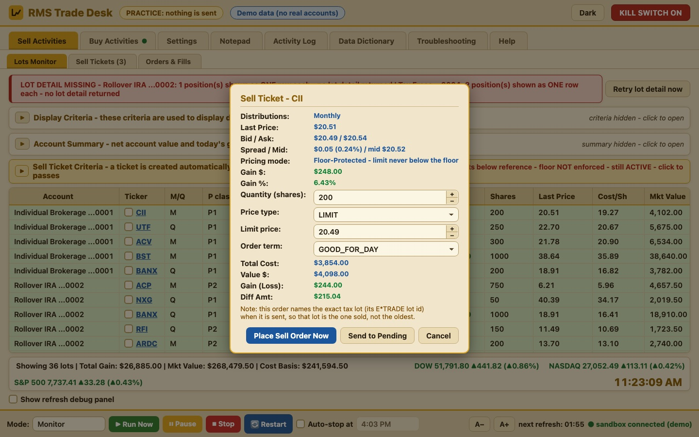
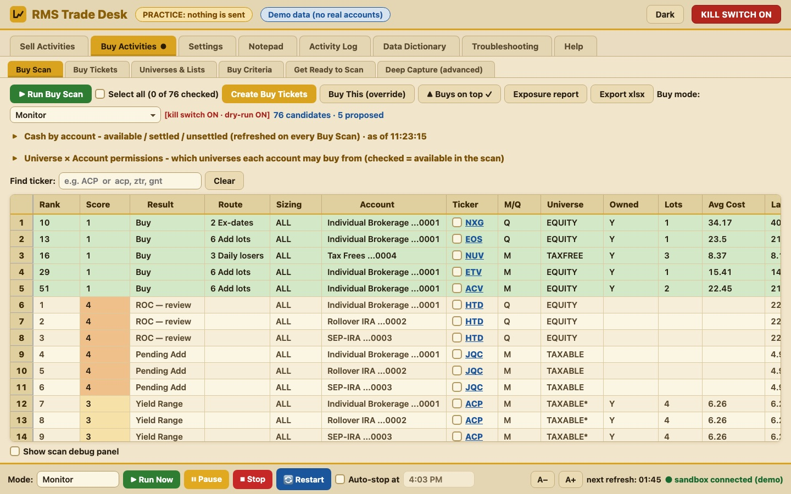
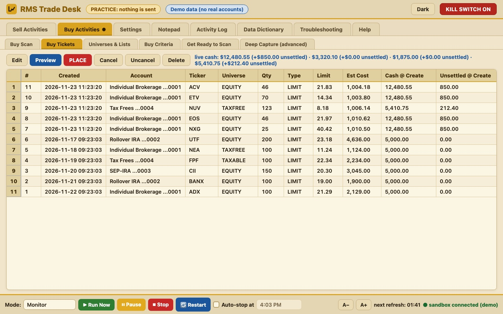

RMS income tool for closed-end fund investors, on your own computer
RMS Trade Desk watches your own closed-end fund lots, finds the ones that have reached your profit target, and builds sell and buy tickets for you. You look at each ticket and confirm it. Nothing is ever sent for you.
Your rules, your lots
You set the minimum gain, profit floor, fee buffer and daily limits. The program shows which of your own lots meet them.
Tickets you confirm
Each ticket shows the exact lot, limit price and gain in plain words. One click, one limit order, only after you confirm.
Practice mode and a kill switch
Practice mode is the default: nothing is sent to a broker. A kill switch stops every order with one click.
Stays on your computer
The program runs on your own computer and opens in your own browser. Your keys and account data stay there. We hold no member data.
See it




Who it is for
Individual investors who follow the RMS method for closed-end fund income and want help finding lots at their profit target and preparing the orders. It is for your own accounts only. It is not used by advisers for clients and never trades for anyone else.
Not investment advice. RMS Trade Desk applies rules that you set. It does not recommend any security, and you are responsible for every order you confirm. See the Terms of Use.